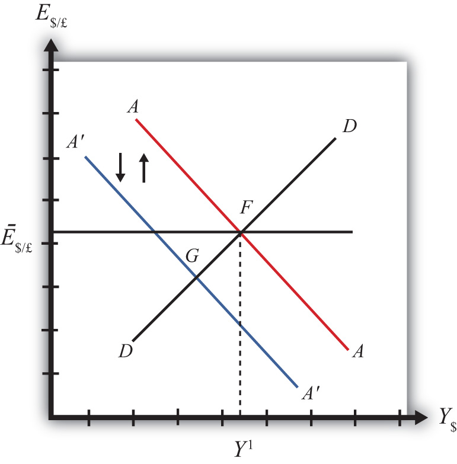

Suppose the United States fixes its exchange rate to the British pound. In this circumstance, the exchange rate system is a reserve currency standard in which the British pound is the reserve currency. The U.S. government is the one that fixes its exchange rate and will hold some quantity of British pounds on reserve so it is able to intervene on the Forex to maintain the credible fixed exchange rate.
It is worth noting that since the United States fixes its exchange rate to the pound, the British pound is, of course, fixed to the U.S. dollar as well. Since the pound is the reserve currency, however, it has a special place in the monetary system. The Bank of England, Britain’s central bank, will never need to intervene in the Forex market. It does not need to hold dollars. Instead, all market pressures for the exchange rate to change will be resolved by U.S. intervention, that is, by the nonreserve currency country.
Now let’s suppose that the reserve currency country, Britain, undertakes expansionary monetary policy. We will consider the impact of this change from the vantage point of the United States, the nonreserve currency country. Suppose the United States is originally in a superequilibrium at point F in the adjoining diagram with the exchange rate fixed at Ē$/£. An increase in the British money supply will cause a decrease in British interest rates, i£.
As shown in Chapter 20 "The AA-DD Model", Section 20.5 "Shifting the AA Curve", foreign interest rate changes cause a shift in the AA curve. More specifically, a decrease in the foreign interest rate will cause the AA curve to shift downward (i.e., ↓i£ is an AA down-shifter). This is depicted in Figure 23.5 "Expansionary Monetary Policy by a Reserve Country" as a shift from the red AA to the blue A′A′ line.
Figure 23.5 Expansionary Monetary Policy by a Reserve Country
The money supply decrease puts downward pressure on the exchange rate in the following way. When British interest rates fall, it will cause i£ < i$ and interest rate parity (IRP) will be violated. Thus international investors will begin to demand more dollars in exchange for pounds on the private Forex to take advantage of the relatively higher rate of return on U.S. assets. In a floating exchange system, excess demand for dollars would cause the dollar to appreciate and the pound to depreciate. In other words, the exchange rate (E$/£) would fall. In the diagram, this would correspond to a movement to the new A′A′ curve at point G.
Because the country maintains a fixed exchange rate, however, excess demand for dollars on the private Forex will automatically be relieved by the U.S. Federal Reserve (or the Fed) intervention. The Fed will supply the excess dollars demanded by buying pounds in exchange for dollars at the fixed exchange rate. As we showed in Chapter 21 "Policy Effects with Floating Exchange Rates", Section 21.5 "Foreign Exchange Interventions with Floating Exchange Rates", the foreign currency purchases by the Fed result in an increase in the U.S. money supply. This is because when the Fed sells dollars in the private Forex, these dollars are entering into circulation and thus become a part of the money supply. Since an increase in the money supply causes AA to shift up, the AA curve will return to its original position to maintain the fixed exchange rate. This is shown as the up-and-down movement of the AA curve in the diagram. Thus the final equilibrium is the same as the original equilibrium at point F.
Remember that in a fixed exchange rate system, IRP requires equalization of interest rates between countries. When the British interest rates fell, they fell below the rates in the United States. When the U.S. Fed intervenes on the Forex, however, the U.S. money supply rises and U.S. interest rates are pushed down. Pressure for the exchange rate to change will cease only when U.S. interest rates become equal to British interest rates and IRP (i£ = i$) is again satisfied.
Thus after final adjustment occurs, expansionary monetary policy by the foreign reserve currency country in a fixed exchange rate system causes no effects on U.S. GNP or the exchange rate. Since the economy also returns to the original equilibrium, there is also no effect on the current account balance. Fed intervention in the Forex to maintain the fixed exchange rate, however, will cause U.S. interest rates to fall to maintain IRP with the lower reserve country interest rates.
Contractionary monetary policy corresponds to a decrease in the British money supply that would lead to an increase in British interest rates. In the AA-DD model, an increase in foreign interest rates shifts the AA curve upward. The effects will be the opposite of those described above for expansionary monetary policy. A complete description is left for the reader as an exercise.
Honduras fixes its currency, the Honduran lempira (HNL), to the U.S. dollar. Suppose Honduras can be described using the AA-DD model. Consider changes in the exogenous variables in the left column. Suppose each change occurs ceteris paribus. Indicate the short-run effects on the equilibrium values of Honduran GNP, the Honduran interest rate (iHNL), the Honduran trade deficit, and the exchange rate (EHNL/$). Use the following notation:
+ the variable increases
− the variable decreases
0 the variable does not change
A the variable change is ambiguous (i.e., it may rise, it may fall)
| GNP | iHNL | EHNL/$ | |
|---|---|---|---|
| An increase in U.S. interest rates | |||
| A decrease in U.S. interest rates |
Consider the following occurrences. Use the AA-DD model to determine the impact on the variables (+, −, 0, or A) from the twin-deficit identity listed along the top row. Consider only short-run effects (i.e., before inflationary effects occur) and assume ceteris paribus for all other exogenous variables.
| Impact on | ||||
|---|---|---|---|---|
| Sp | I | IM − EX | G + TR − T | |
| An increase in foreign interest rates under fixed exchange rates | ||||
| A decrease in foreign interest rates under fixed exchange rates | ||||